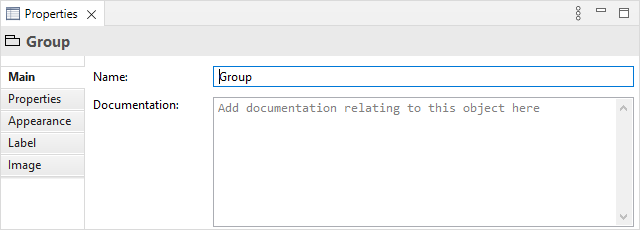
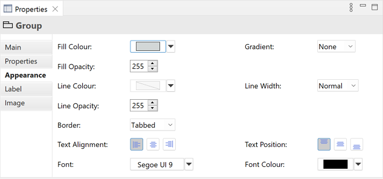
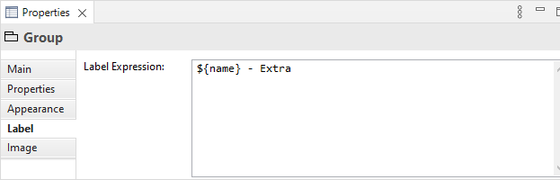
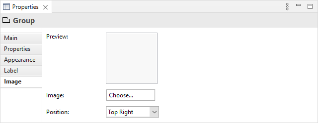

在视图中选择一个组意味着您可以在属性窗口中编辑或查看以下属性。
主标签页
编辑组的“主”属性
| 名称: | 组的名称 |
| 文档: | 一个输入与组相关的一些用户文档的空间 |
属性标签页
有关创建和管理用户属性的更多信息,请参阅用户属性。
外观标签页
编辑组的“外观”属性
| 填充颜色: | 设置组的填充颜色。“默认”按钮将填充颜色设置为默认设置。 |
| 渐变: | 设置用于绘制所选元素渐变填充的方向。设置有“无”、“顶部”、“左侧”、“右侧”和“底部”。注意 - 当以 SVG 图像格式导出图时,渐变将不可见。 |
| 字体: | 设置组中文本的字体。“默认”按钮将字体设置为在首选项中设置的默认字体。 |
| 字体颜色: | 设置组中文本的颜色。“默认”按钮将字体颜色设置为默认设置。 |
| 填充不透明度: | 设置图形的填充不透明度。范围从 0-255。 |
| 线条颜色: | >设置用于绘制所选元素的线条颜色。“派生自填充颜色”下拉选项根据填充颜色设置线条颜色。“默认”下拉选项将线条颜色设置为首选项中设置的默认颜色。如果“默认”下拉选项不可见,则是因为线条颜色是从元素的填充颜色派生的,如“派生自填充颜色”下拉选项中所设置的。 |
| 线宽: | 设置用于绘制组的线条宽度。选项有“正常”、“中等”和“粗”。 |
| 线不透明度: | 设置图形的线不透明度。范围从 0-255。 |
| 边框: | 设置边框类型。可以是“标签”或“矩形”。 | 文本对齐: | 将所选对象中的文本对齐到左侧、居中或右侧。 |
| 文本位置: | 将所选对象中的文本对齐到顶部、中间或底部。 |
标签页
添加要在视图中显示的标签表达式
默认情况下,组的名称将显示在其出现的视图中。使用标签表达式,您可以选择在视图中显示的组的内容。例如,您可能希望显示组的名称和一个或多个属性。
有关表达式类型的完整列表,请参阅 Archi Wiki。
图像标签页
组的图像属性
| 预览: | 显示图像在组中呈现的效果的预览图像。双击预览框将启动图像选择器对话框。您也可以从桌面拖放一个图像文件到预览框上。 |
| 图像: | 为对象选择一个图像或清除图像。有关更多详细信息,请参阅“向对象添加图像”。 |
| 位置: | 设置图像相对于对象的位置。 |